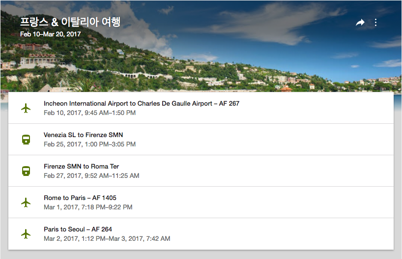

파리 여행 2일차
1년 전 오늘
2월 10일이라는 날짜가 묘하게 특별하게 느껴지던 와중 1년전 오늘 '특별한 추억'이 있다는 알림이 떴다. 프랑스와 이탈리아로 여행을 다녀온 지 벌써 1년이 됐다. 여행 기간이 마침 블로그를 시작하던 무렵이어서 간간히 블로그에 사진과 함께 여행을 기록해두려 했던 기억이 나는데 결국 하나밖에 안남겼다😭 1년이나 지났지만 시간 나는대로 짧게짧게 정리해보려한다.
종강효과
시험공부 말고는 모든 게 하고싶은 종강 시즌. 정말 뜬금없이 떠나고 싶다는 생각이 들었다. 전부터 유럽에 가보고 싶다는 막연한 바람이 있었는데 거기에 이번 방학이 아니면 앞으로 몇 년간은 장기간 여행하긴 쉽지 않을 거라는 느낌이 들었다. 하지만 그저 "한번 가보고싶다" 였을 뿐 유럽에 대해 아는 것도, 여행에 대한 지식도 없었고 깊게 생각해본 적도 없었다. 무작정 가자니 걱정이 앞섰다. 주변에서 같이 갈 사람을 찾아보았는데 당장 한 달 뒤에 갑자기 여행 갈 사람을 찾기 어려웠다.
하지만 안 가면 두고두고 후회할 것 같아서 무작정 티켓부터 끊었다. 갈까 말까 할 땐 가라 하지 않나! 다만 출발이 얼마 남지 않아 티켓 값이 비쌀까 걱정이었는데 일정 선택에 여유가 있어서그런지 예상보다 괜찮은 가격에 찾을 수 있었다. 그렇게 가기로 마음먹었다. 
첫째 날
유일하게 글을 써 놨다. 서울 출발, 파리 도착
둘째 날
파리는 여유로운 분위기였다. 여유로운 분위기 속에서 급하게 돌아다니고싶지 않아 널널한 일정을 짰다. 첫째 날은 거의 숙소 주변만 둘러봤고 둘째 날은 숙소와 가까이 있던 시테 섬 위주로 돌아다녔다.